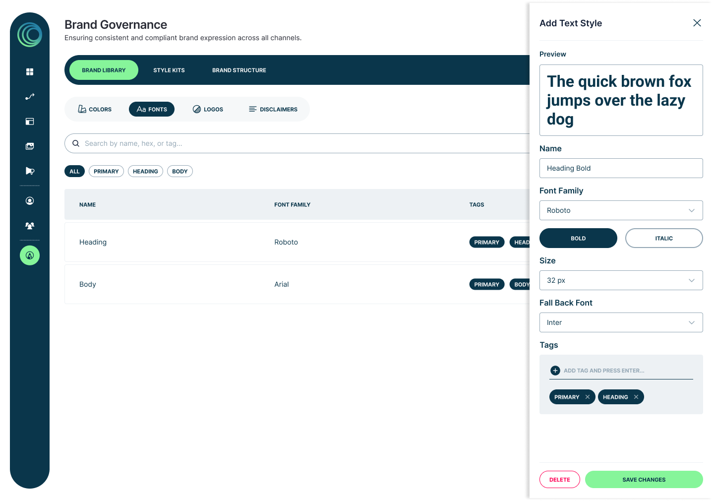
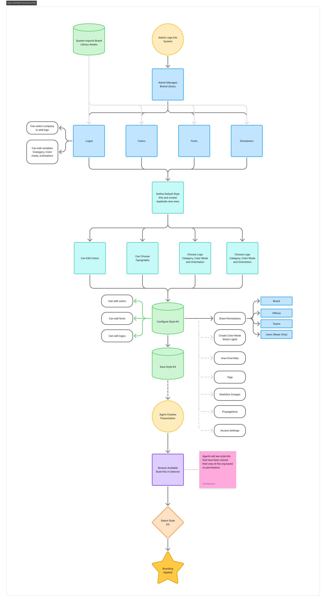
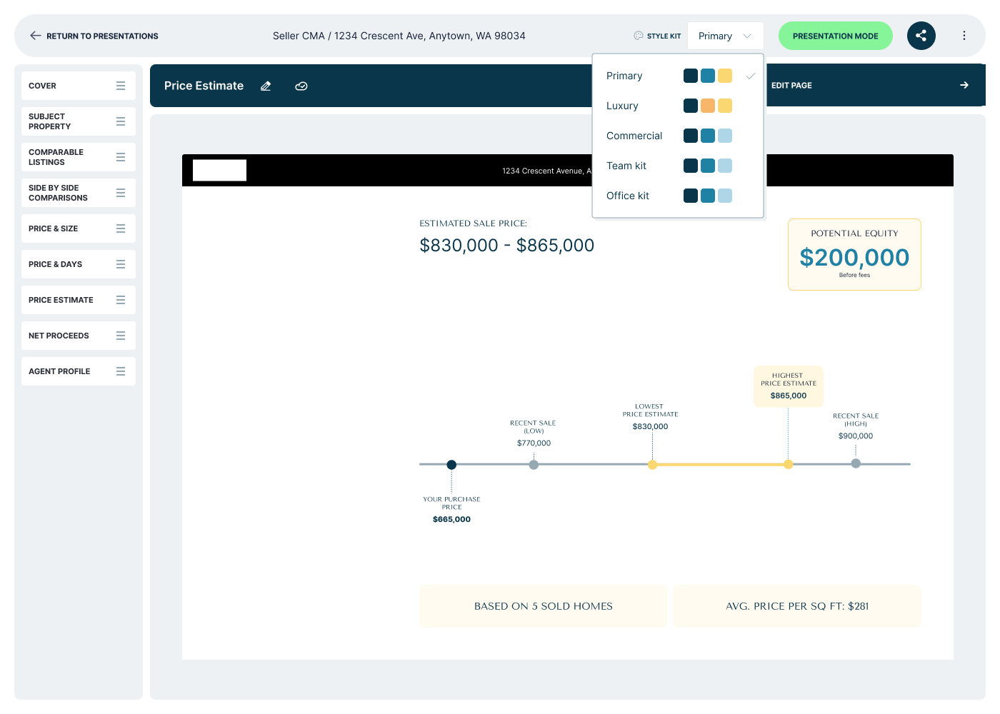
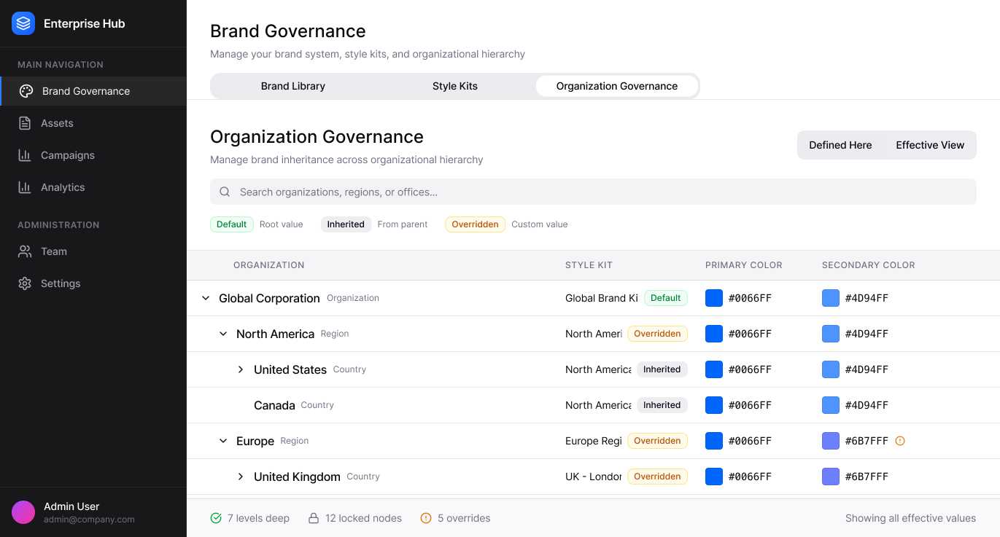

Designing Brand Governance for Enterprise Scale
How do you help thousands of agents stay on brand without relying on manual processes?
- Centralized brand management for thousands of agents into a single source of truth.
- Introduced reusable Style Kits consumed across multiple RISE products.
- Replaced manual brand policing with a scalable, governed system.
Why this project existed
MoxiWorks serves real-estate brokerages whose brands live across hundreds of offices and thousands of agents. Branding existed, but it lived in a legacy service that wasn't self-serve – changes went through a service team, and admins had no way to see or manage their own brand system.
The result was guesswork and brand drift at scale. Admins couldn't verify what was set where. Agents worked around controls. And as the RISE product ecosystem grew, every new product needed brand – without a governed system to inherit it from.
Four decisions, built in the order they actually happen
This is the real sequence: define the brand once, package it, make it cascade under control, and prove it scales beyond one screen – the problem, the options, and the reasoning behind each one.
Turning scattered brand assets into a single library
Colors, fonts, logos, and legal disclaimers already existed in a legacy branding service – but managing them required the service team, not the brand's own admins. Making governance self-serve meant restructuring those assets so a system could read, tag, and enforce them.
Decision · A self-serve Brand Library where every asset is named, tagged, and explicitly locked or open – the raw material everything else in this flow is built from.

Packaging brand into something agents can apply
Agents needed brand-correct assets without becoming designers. Defining brand once had to produce consistent outputs everywhere it was consumed.
Decision · Reusable Style Kits that bundle logos, color, type, and rules into a single applied unit – the source of truth other products read from.

Making the hierarchy cascade – under control
Brand still had to reach thousands of agents through hundreds of offices, cascading brand → office → team → agent, each level inheriting or overriding. Exposed naively, that hierarchy overwhelmed admins. And the moment Style Kits cascaded automatically, a second question opened: how much could an agent still change locally? Too much admin control creates friction; too little invites brand drift.
Decision · An inheritance model that shows what's inherited and what can be overridden, paired with a permission layer where admins lock the elements that matter and unlock the rest – the hierarchy stays visible and control stays intentional.

Architecting for the platform, not the page
None of this mattered if it only worked for one screen. Whatever shipped had to be consumed by many RISE products, not just one – and hold up as the ecosystem grew.
Decision · A platform capability – branding as a shared service the ecosystem reads from, not a per-product feature that gets rebuilt.

Wider exploration, faster alignment
I used Figma Make to rapidly generate multiple organizational models for how brands could inherit settings across the hierarchy – brand, office, team, agent. Generating working variations in hours rather than days let me compare structures side by side and bring stakeholders into the tradeoffs with something concrete to react to.
AI increased the breadth of exploration; it didn’t replace the design thinking. The judgment about which model held up under governance constraints, and which would confuse admins, stayed firmly a design decision.

Testing with real admins and agents
I ran structured sessions with brokers, office admins, and agents at different points in the process: first with rough concepts to pressure-test the inheritance model, then with a higher-fidelity prototype to validate the Style Kit application flow.
Two things changed the design:
- Admins wanted to see which agents had applied a kit before publishing changes.
- Agents needed a clearer preview of what a kit would look like on their own materials before committing.
A foundation the ecosystem builds on
The work established branding as a governed platform capability rather than a per-product feature – setting the direction for how RISE products consume brand going forward.
Fewer manual brand reviews
Reframed from "something we check" to "infrastructure we inherit," changing how Product and leadership scoped the work.
Style Kits adopted across multiple RISE products
Style Kits became the pattern other products subscribe to instead of rebuilding their own branding solutions.
One hierarchy for thousands of agents
Brand settings cascade brand → office → team → agent with visible overrides – one hierarchy the whole ecosystem shares.
What this project taught me
The hardest part was designing for both ends of the scale at once. The same system had to govern a brand spanning hundreds of offices and multiple levels of hierarchy – and still make sense to a small company with one admin and no appetite for "governance." Complexity overwhelming smaller organizations was the risk we named first, and it pressed on every design decision.
What carried forward: make the defaults do the governing. Inheritance meant most admins never had to configure anything – the brand cascaded correctly on its own, and the deeper controls surfaced only when an organization's structure actually demanded them. Progressive disclosure isn't a UI trick; it's how a complex system earns the right to feel simple.